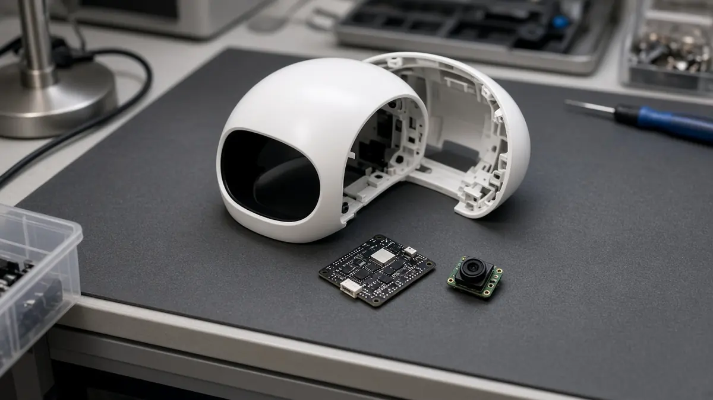

Policy
Lightberry's Lumi humanoid gets a US Conditional Approval and is exempted from the FCC Covered List
Short answer: On 30 October 2026, the US Federal Communications Commission issued Public Notice DA 26-1181, which exempts Lightberry Holdings' "Lumi Interactive mobile robots" from the FCC Covered List after the Department of War (DoW) granted them a Conditional Approval. San Francisco start-up Lightberry says this clears the way for it to market and sell Lumi in the United States, according to its announcement.
According to Lightberry, the FCC on 28 July 2026 added foreign-produced advanced robotic devices to the Covered List, except those granted a Conditional Approval by the DoW, and devices on that list cannot receive the FCC authorisation needed to be imported, marketed or sold in the US. The FCC notice says a Conditional Approval is "a specific determination" by the DoW that the devices do not pose risks to US national security.
The exemption comes with conditions. The FCC notice says it depends on each company's continued compliance with the onshoring plan in its application and on updated vetting of its products. A footnote adds that failing to follow the plan, or a false statement in the application, could end the approval and put the equipment back on the Covered List. Lightberry says its plan includes replacing the robot's sensors, onboard computer and software with its own, and starting US manufacturing with the body, head and hands.

Lightberry says Lumi is about 127 cm tall and designed for businesses, where it can hold conversations, guide visitors, tell stories and take photos. The company says Lumi is compatible with the Unitree G1, and that a Founder Edition priced at $39,990 will ship in 2026. Lightberry was founded in 2025 by chief executive Ali Attar and Stephan Koenigstorfer, according to the announcement, and it describes itself as the first and only American humanoid robot company cleared by the US government.
The same notice also lists approvals for warehouse and industrial robots from ARAPL, ATI Motors, SunScout, Swap Robotics and OMRON, a drone from Voliro and power inverters from Ingeteam. For more on US policy toward robot imports, see our story on the Section 232 robotics review and our funding and policy hub.
Sources
- FCC Public Notice DA 26-1181: Conditional Approvals and Covered List exemptions (FCC, 30 Oct 2026)
- Lightberry Lumi is the First and Only American Humanoid Robot Company cleared by the U.S. Government (Lightberry, 30 Oct 2026)
- FCC Updates Covered List with Conditional Approvals for UAS and Robotics (fccid.io, 30 Oct 2026)